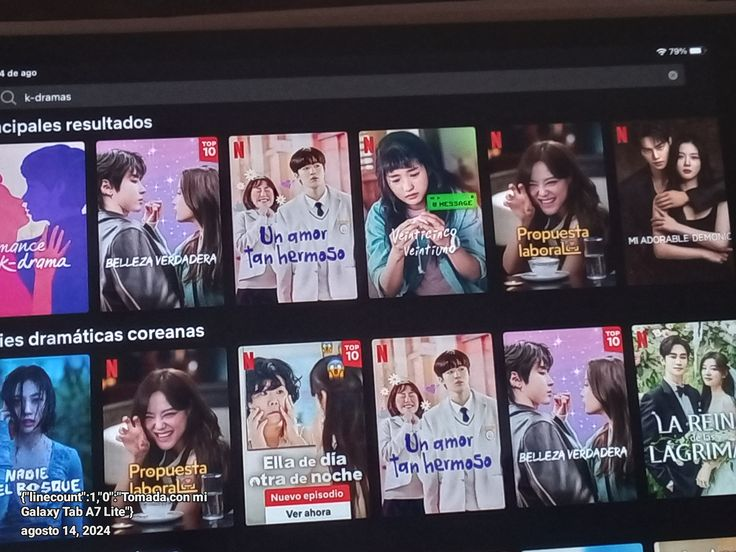
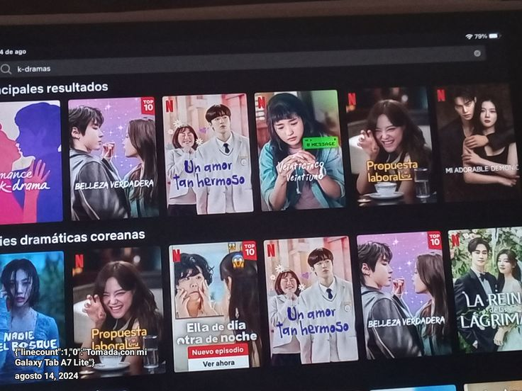
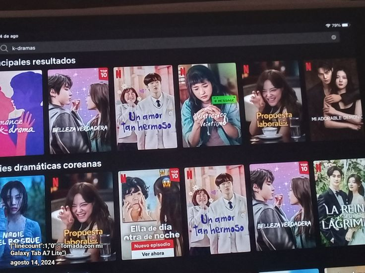

Stranger Things
Me gusta pasar tiempo viendo series de todo tipo, mi favorita es stranger things y la verdad siempre que me la termino la vuelvo a empezar, pero tambien casi siempre veo de todo.
 

Me gusta pasar tiempo viendo series de todo tipo, mi favorita es stranger things y la verdad siempre que me la termino la vuelvo a empezar, pero tambien casi siempre veo de todo.

Stranger Things fue creada, dirigida y escrita por los
Hermanos Duffer y distribuida mediante Netflix®. se estrenó en la plataforma
el (1 temp); la segunda y
tercera temporada se estrenó el
(2 temp) y el
(3 temp), su cuarta temporada se estrenó en 2 partes el 27 de mayo y el
(4 temp)y su quinta
y última temporada se estrena el 26 de noviembre de 2025 (5 temp)
, el 25 de diciembre de 2025 y el 31 de diciembre de 2025..
Mi gusto hacía las series, en este caso Stranger Things es porque me gustan las peliculas o series donde hay un poco de acción, terror y además por alguna razón cuando veo esta serie me recuerda a cuando la vi por primera vez en 2016 que como lo mencioné anteriormente fue su estreno, en ese tiempo estaba un poco pequeña y de vacaciones así que disfrute y aproveche verla, yo creo que esa es una de las razones por la cual me gusta mucho volver a mirarla, también esa canción de la intro al princpio me trae demasiada nostalgia :D.
Algunos fanaticos suelen traducir los guiones y después los publican en PDF, también existen comics 100% orginiales sobre esta serie, aquí dejo un guión traducido, por derechos de autor y legalidad por obvias razones no es posible poner algún PDF de un comic, pero actualmente se encuentran disponibles en venta en Amazon, Mercado libre, etc.